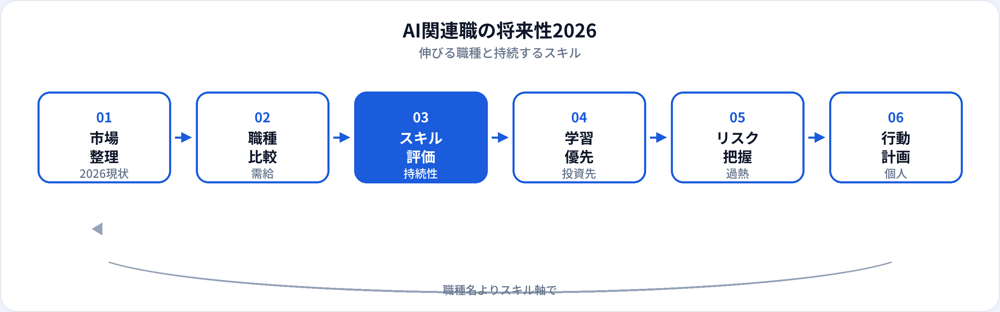

生成AIの普及以降、AI関連職の求人は増えた一方で、職種名と実務内容のズレや、一時的な hype と持続需要の混在も目立ちます。本記事は個別職種の年収ではなく、2026年6月時点の市場全体として、職種別の将来性、残るスキル、需給の読み方、過熱への冷静な視点を整理します。職種ごとの詳細・年収は各ガイド記事を参照してください。
2026年のAI求人市場の全体像
2026年時点では、大きく3つの流れが並行しています。（1）既存の機械学習・データ基盤の継続需要、（2）LLM・RAG・エージェントを中心とした生成AIプロダクトの拡大、（3）全職種に広がるAIリテラシー要求です。
「AI」と名の付く求人が増えても、中身はデータ分析・業務効率化・社内研修だけ、というケースもあります。将来性を考えるときは職種名よりスキルと業務の中身で判断するのが安全です。
職種別の将来性（目安）
以下は2026年6月時点の一般的な市場感覚による目安です。企業・地域・個人のスキルで大きく変わります。
| 職種 | 需要の方向性 | コメント | 詳細 |
|---|---|---|---|
| 生成AIエンジニア | ◎ 高い | LLM/RAG/評価の実装需要が継続。競合も増加 | 記事へ |
| AIエンジニア | ○ 高い | ML実装・推論APIの基盤職として安定 | 記事へ |
| MLOpsエンジニア | ○ 高い | 本番運用・ガバナンス重視で需要継続 | 記事へ |
| 機械学習エンジニア | ○ 高い | 生成AIと併せてパイプラインスキルが重要 | 記事へ |
| データサイエンティスト | ○ 中〜高 | 分析・意思決定支援は継続。自動化圧力も | 記事へ |
| データアナリスト | ○ 中〜高 | 入口職として安定。BI＋AI活用が標準に | 記事へ |
| AIプロダクトマネージャー | ○ 中〜高 | AI機能を持つプロダクトが増加 | 記事へ |
| プロンプトエンジニア | △ 専任は限定的 | スキルとして他職種に統合されつつある | 記事へ |
職種の比較はAI・ML・MLOpsの選び方、DSとアナリストの違いも参照してください。
生成AIブーム後も残るスキル
hype が落ち着いても、価値が残りやすいスキルは次の通りです。
データの扱い
SQL、品質管理、パイプライン。モデル以前の基盤は普遍的。
評価と改善
指標設計、A/Bテスト、ハルシネーション対策。生成AIでも必須。
本番運用
監視、再学習、コスト管理。PoC止まりを防ぐ力。
リスク・ガバナンス
セキュリティ、著作権、説明責任。規制強化とともに重要度上昇。
ドメイン知識
業界課題の理解。汎用ツールだけでは代替しにくい。
コミュニケーション
非エンジニアへの翻訳、要件定義。組織導入で差が出る。
過熱しやすい領域と冷静な見方
| 過熱しやすいイメージ | 冷静な見方 |
|---|---|
| 「ChatGPTが使えるだけ」の職種 | ツール操作は差別化になりにくい。業務設計・評価まで含める |
| 職種名だけ「AI」の求人 | JDの実務（データ・実装・運用）を確認する |
| 最新論文実装のみのポートフォリオ | 業務に近い再現可能な題材の方が採用で評価されやすい |
| 短期間で年収2倍の話 | 個人差が大きい。スキルと市場の両方を見る |
需給の読み方
求人票を読むときのチェックポイントです。
-
必須スキルの具体性
「AIに興味」だけでなく、Python・SQL・クラウド・評価指標などが列挙されているか。
-
チーム構成
一人でDSからMLOpsまで担うか、役割分担があるか。スタートアップと大企業で異なる。
-
プロダクトか受託か
自社プロダクトのAI機能か、客先常駐のAI案件か。キャリアの積み方が変わる。
-
未経験可の有無
第二新卒・キャリアチェンジ向けは第二新卒ガイドも参照。
キャリア判断の流れ

個人のキャリア設計への示唆
よくある質問
2026年もAIエンジニアは需要がある？
実装・評価・本番運用を担うエンジニア職の需要は継続しています。LLM・RAG・MLOpsなどスキルセットで見ることが重要です。
プロンプトエンジニアは将来性がある？
専任職は限定的ですが、プロンプト設計スキルは多くの職種に組み込まれています。プロンプトエンジニアの解説も参照してください。
生成AIブームが落ち着いたら仕事は減る？
ツール体験だけのポジションは整理される一方、データ・評価・運用・ガバナンスの需要は残りやすいです。
未経験から入るならどの職種が現実的？
データアナリストや社内AI推進が入口として現実的なことが多いです。
年収トレンドは別記事がある？
職種ごとの年収目安は各職種ガイドに記載しています。AIエンジニアの相場・推移の詳細は年収の推移と相場の見方を参照してください。